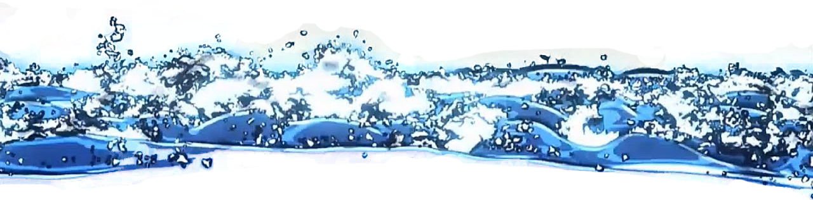
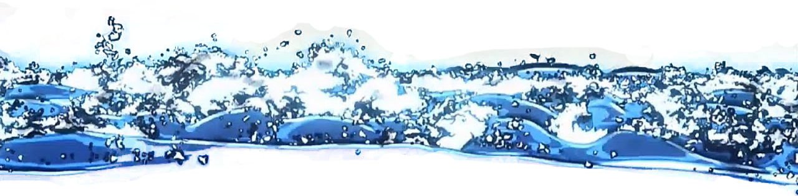

基本五流派呼吸法之一。日輪刀刀刃一般為藍色，只有炭治郎例外。使用者：竈門炭治郎、鱗瀧左近次、富岡義勇、錆兔、真菰、村田。
基本型有十種，由於適合初心者，在五流派中是最容易習得，也是衍生流派最多的呼吸法。有許多劍士都是使用水之呼吸，有如流水變換自如，
可利用對手的攻擊，依照當時情況隨機變化來斬擊鬼的頸部。富岡獨創出拾壹之型「風平浪靜」。衍生呼吸法則有「蛇之呼吸」、「花之呼吸」。
鬼滅之刃播放到現在，水之呼吸十型已經全部展現出來了。作為以變化為主的水之呼吸，有着藍白色的特效，
漂亮至極。並且能夠根據不同的場景需求，使出不同的型來加以應對。
基本五流派呼吸法之一。日輪刀刀刃為黃色。使用者：我妻善逸、桑島慈悟郎、獪岳。
原基本型為六種（後善逸獨創柒之型「火雷神」），帶着有如轟雷般的巨大聲響與速度，快速斬殺鬼的頸部，
原理是出招時將意識集中於腳部累積起來，再一口氣爆發出去。在五流派中是最難習得的呼吸法之一，
歷代使用雷之呼吸的柱被稱為「鳴柱」，衍生呼吸法有「音之呼吸」。
善逸目前除壹之型外，其餘五種型都沒學會，但自創了柒之型；而獪岳則是學會了貳至陸之型，但是唯獨怎麼樣都學不會壹之型。
基本五流派呼吸法之一。日輪刀刀刃為紅色。使用者：煉獄家族、煉獄杏壽郎、煉獄槇壽郎。
基本型為九種，有如烈火般激烈的突進，即使在行駛中的列車上也能輕鬆如飛越般行動。
在基本五流派中與日之呼吸有着最深的關聯，這些資料也被繼承炎之呼吸的煉獄一族傳承下來，由於「日」和「火」的日文同為「ひ」，因此煉獄一族自古就嚴禁使用「火之呼吸」之名。
故事開始的250年前，世界各地的某些地方噴出火焰，導致陸地四分五裂，也使得許多國家消失、大量生物滅絕，部分國家的遺民進入仍然完好的東京皇國生活，受到移民影響，多數人開始將姓和名倒過來稱呼，而原國主義者則排斥這種變化並盡可能維持原有傳統，因此雙方多有衝突。
出現於刀劍神域（TV第九話）。桐人的EXTRA技能，是希茲克利夫(茅場晶彥)獎勵給全SAO中擁有最快反應速度的玩家的技能，上位劍技（Sword Skill）為共十六連擊的“星爆氣流斬”（Star Burst Stream），上位劍技“雙重扇形斬”，最上位劍技為二十七連擊的"日蝕"（Eclipse）（與希茲克利夫最終決鬥中使用）
相當電波，具有杏懶惰風格的角色曲。本家每首曲都有更換不同的偶像演唱的需要，所以歌曲不會帶有太多與角色相關的元素；而灰姑娘女孩側重點為角色個性，因此本曲從標題、歌詞都和雙葉杏相關。
「47の素敵な街へ」（よんじゅうななのすてきなまちへ）は、日本の女性アイドルグループ・AKB48 Team 8の楽曲。作詞は秋元康、作曲はSungho、編曲は野中“まさ”雄一が担当した。楽曲のセンターポジションは中野郁海が務めた。